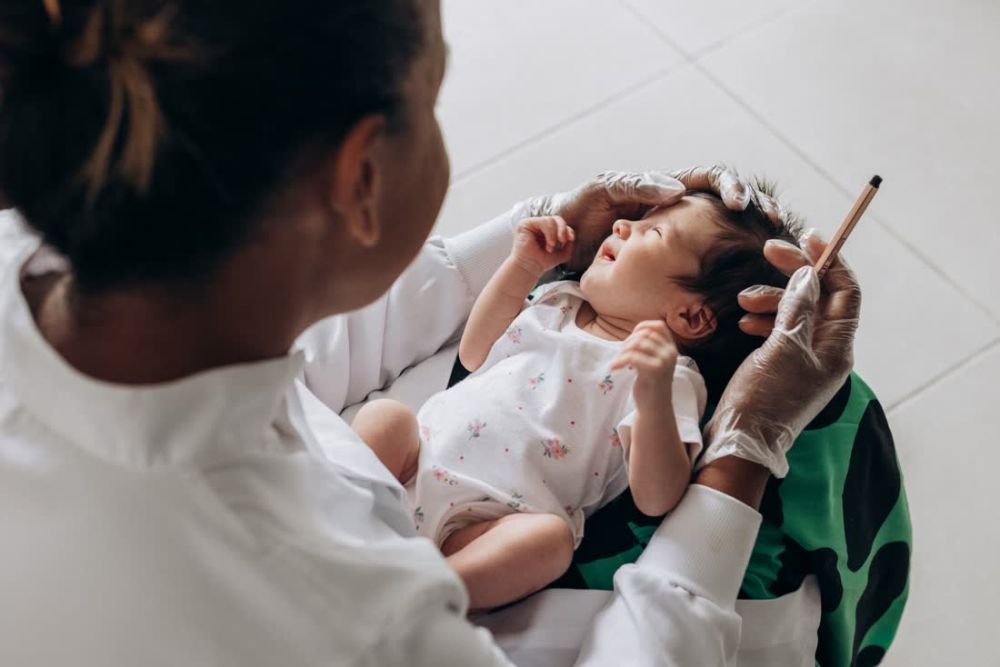
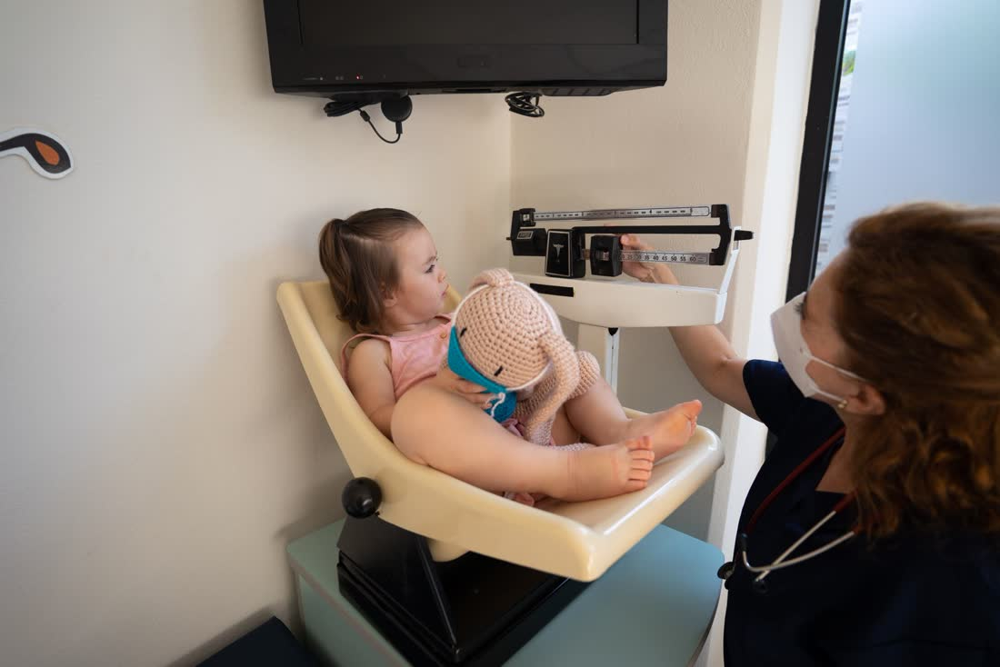
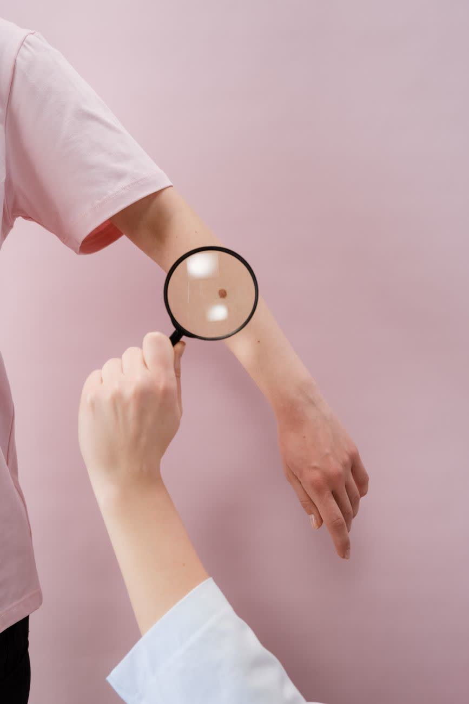
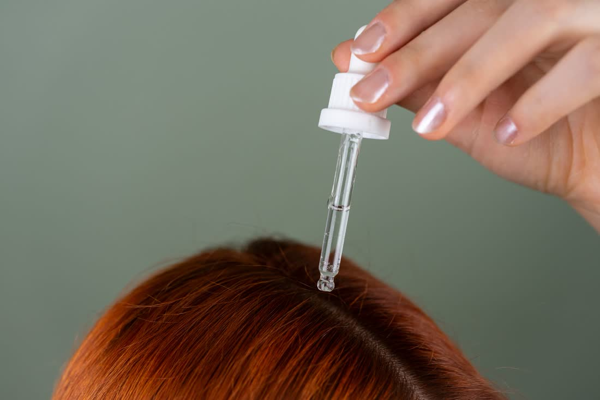
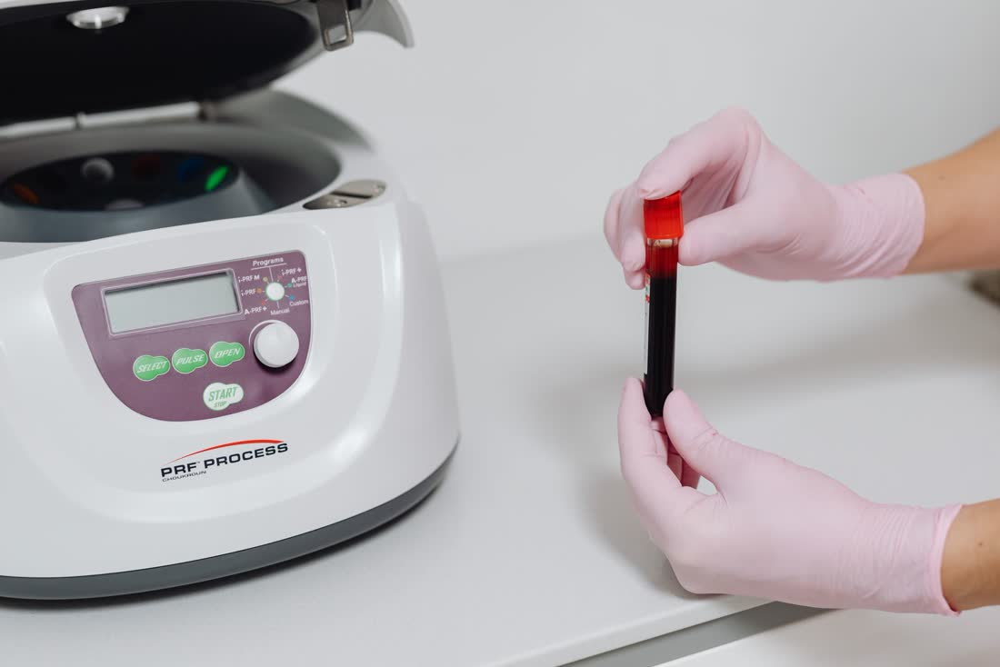
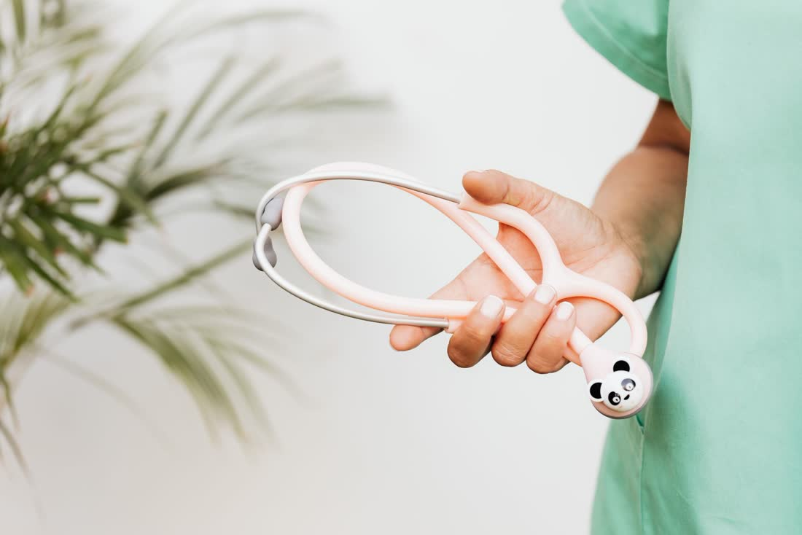

1 mes a 12 años
N.º01
Turnos
disponibles
Del primer control al cuidado de tu piel. Pediatría, neonatología, dermatología y estética médica en Loma Hermosa
Consultorio de la Dra. Andrea Montenegro, médica del Hospital Dr. Carlos Bocalandro con más de 30 años de experiencia. Elegí por dónde entrar.
- +30 añosde experiencia médica
- Hospital Bocalandromédica del Hospital Dr. Carlos Bocalandro
- Loma Hermosaconsultorio en Tres de Febrero
01 · El tallímetro
¿Para quién es el turno?
Deslizá la marca por el tallímetro —o tocá una etapa— y te mostramos qué se atiende en el consultorio para esa edad.
02 · Puerta 1
Consultorio médico
Seguimiento del crecimiento desde el primer día, controles, certificados y consulta dermatológica.

Control del recién nacido
Los primeros controles del bebé y la consulta de neonatología, desde los primeros días.
Consultar turno →
Control de niño sano
Controles periódicos de peso, talla y desarrollo para acompañar cada etapa.
Consultar turno →
Certificados
Certificados médicos para el colegio, el club o la actividad que los pida.
Consultar turno →03 · Puerta 2
Mesomed estética médica
Plasma rico en plaquetas y mesoterapia realizados por médicos. Elegí la zona y consultá las promos del momento.

Zona · Cabello
Los precios y las promos se consultan por WhatsApp. Cada tratamiento se indica después de una evaluación médica.

¿Qué es el plasma rico en plaquetas?
Es un tratamiento que se prepara con una muestra de sangre de la propia persona: se centrifuga, se separa la fracción rica en plaquetas y se aplica en el cuero cabelludo o en el rostro. En Mesomed lo realiza un médico.
04 · Pedí tu turno
Tu turno, en el recetario
Completá lo que sepas: armamos el mensaje y lo mandás por WhatsApp con un toque.

05 · La doctora
Andrea Montenegro, la “Dra. Mon”
Médica del Hospital Dr. Carlos Bocalandro, con más de 30 años de experiencia. En su consultorio de Loma Hermosa atiende pediatría, neonatología y dermatología, y con Mesomed suma tratamientos de estética médica realizados por médicos.
La encontrás también en Instagram y Threads como @dra.andymon, donde publica los turnos disponibles y las promos.
06 · Preguntas
Antes de venir
¿Dónde queda el consultorio?
En Loma Hermosa, partido de Tres de Febrero. Escribinos por WhatsApp y te pasamos la dirección y los días de atención.
¿Cómo saco turno?
Por WhatsApp al 11 4960-9904. Si querés, completá el recetario de arriba y el mensaje sale armado con el paciente, el motivo y el horario que te queda mejor.
¿Atienden por obra social?
Consultalo por WhatsApp indicando tu obra social o prepaga y te confirmamos cómo es la atención.
¿Hacen certificados?
Sí, el consultorio de pediatría hace certificados médicos. Pedí el turno contando para qué lo necesitás.
¿Quién hace los tratamientos de Mesomed?
El plasma rico en plaquetas y la mesoterapia los realizan médicos. Antes de indicar un tratamiento se hace una consulta.